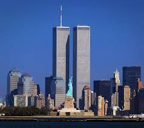
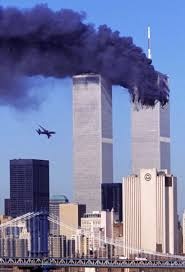
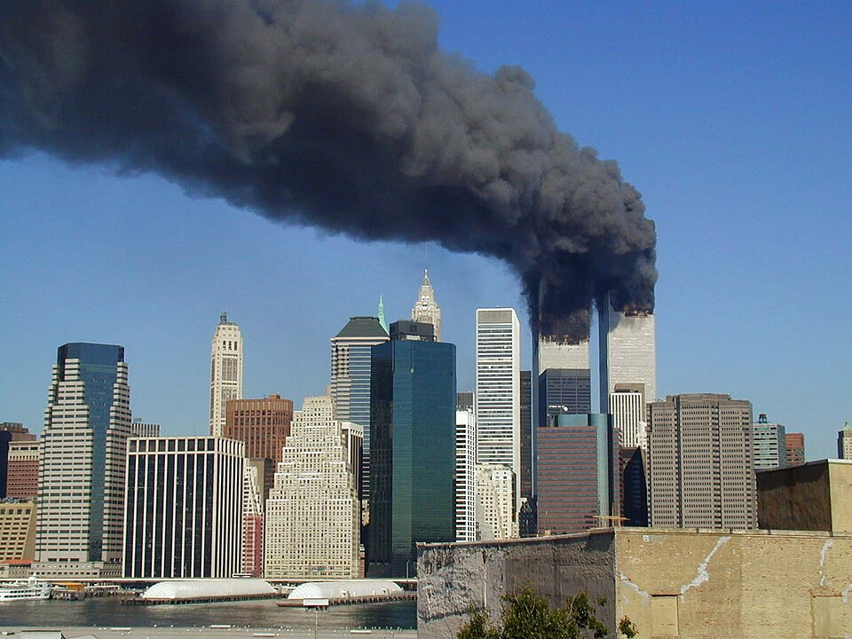

September 11 Attacks - Twin Towers
On September 11, 2001, the United States experienced one of the most devastating terrorist attacks in its history. Two hijacked commercial airplanes were flown into the Twin Towers of the World Trade Center in New York City, causing both towers to collapse within hours.
The attacks were carried out by the extremist group al-Qaeda and resulted in the deaths of nearly 3,000 people. Thousands more were injured, and the event had profound impacts on global politics, security, and public awareness.
In the aftermath, the U.S. launched the War on Terror, leading to significant changes in national security policies and global counter-terrorism strategies.